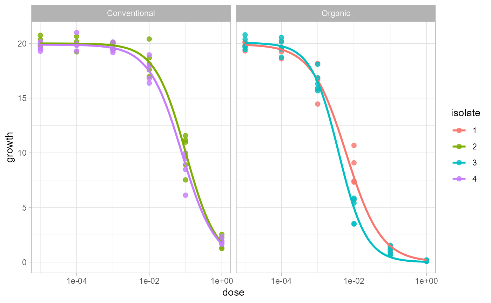
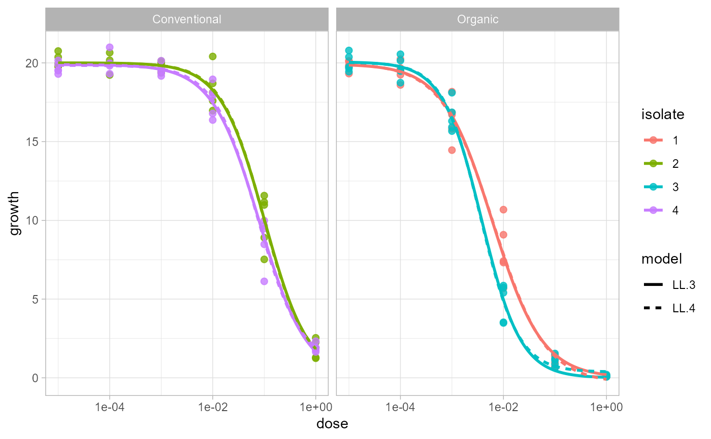

Plot fitted dose-response curves for multiple isolates
Source:R/plot-ec50-curves.R
plot_EC50_curves.Rd`plot_EC50_curves()` plots an object returned by [estimate_EC50()] or [ec50_multimodel()]. It uses the formula, original data, grouping columns, and fitted `drc` models stored in that result, so users do not need to repeat the modeling arguments. For compatibility, the function also accepts the original formula/data interface.
Usage
plot_EC50_curves(
x,
data = NULL,
isolate_col = NULL,
strata_col = NULL,
fct = NULL,
color_col = NULL,
facet_col = NULL,
facet_row = NULL,
n_points = 200,
log_x = TRUE,
point_size = 2,
point_alpha = 0.8,
line_width = 1,
quiet = FALSE
)Arguments
- x
An object returned by [estimate_EC50()] or [ec50_multimodel()]. A two-sided formula such as `growth ~ dose` is also accepted for compatibility.
- data
A data frame containing the response, dose, isolate, and optional stratification columns. Required only when `x` is a formula.
- isolate_col
Character scalar naming the column that identifies each isolate. Required only when `x` is a formula.
- strata_col
Optional character vector naming columns used to split the data before fitting models. Used only when `x` is a formula.
- fct
A `drc` model function object such as `drc::LL.3()`, or a list of model function objects such as `list(drc::LL.3(), drc::LL.4())`. Required only when `x` is a formula.
- color_col
Character scalar naming the column mapped to curve and point color. Defaults to the isolate column and is always converted to a factor before plotting.
- facet_col, facet_row
Optional character scalars naming columns used for faceting. When omitted, the first two `strata_col` values are used.
- n_points
Number of dose values used to draw each fitted curve.
- log_x
Logical. If `TRUE`, use a log10 x-axis and omit non-positive dose values from the plotted data and prediction grid.
- point_size, point_alpha
Size and alpha for raw observation points.
- line_width
Width for fitted curves.
- quiet
Logical. If `FALSE`, failed group/model fits are reported with a warning.
Value
A `ggplot2` object. The plotted curve data, observed data, and fitted models are attached to the returned object as `curve_data`, `observed_data`, and `fitted_models` attributes and list elements.
Examples
data(multi_isolate)
sample_data <- subset(
multi_isolate,
isolate %in% 1:4 & fungicida == "Fungicide A"
)
fit <- estimate_EC50(
growth ~ dose,
data = sample_data,
isolate_col = "isolate",
strata_col = "field",
fct = drc::LL.3()
)
plot_EC50_curves(fit)

multi_fit <- ec50_multimodel(
growth ~ dose,
data = sample_data,
isolate_col = "isolate",
strata_col = "field",
fct = list(drc::LL.3(), drc::LL.4())
)
plot_EC50_curves(multi_fit)
